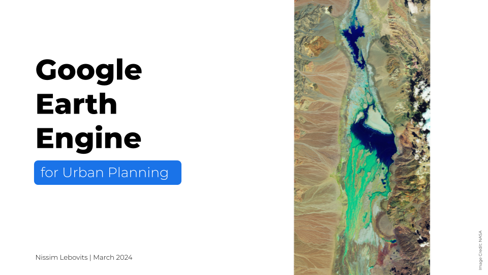
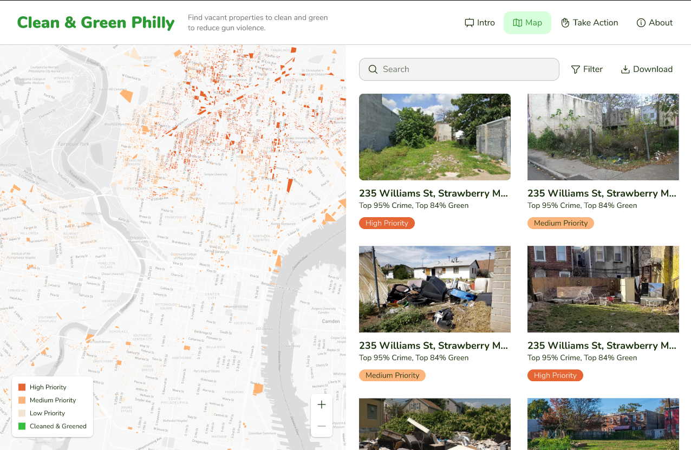
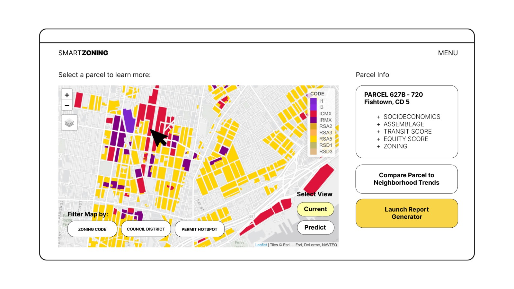
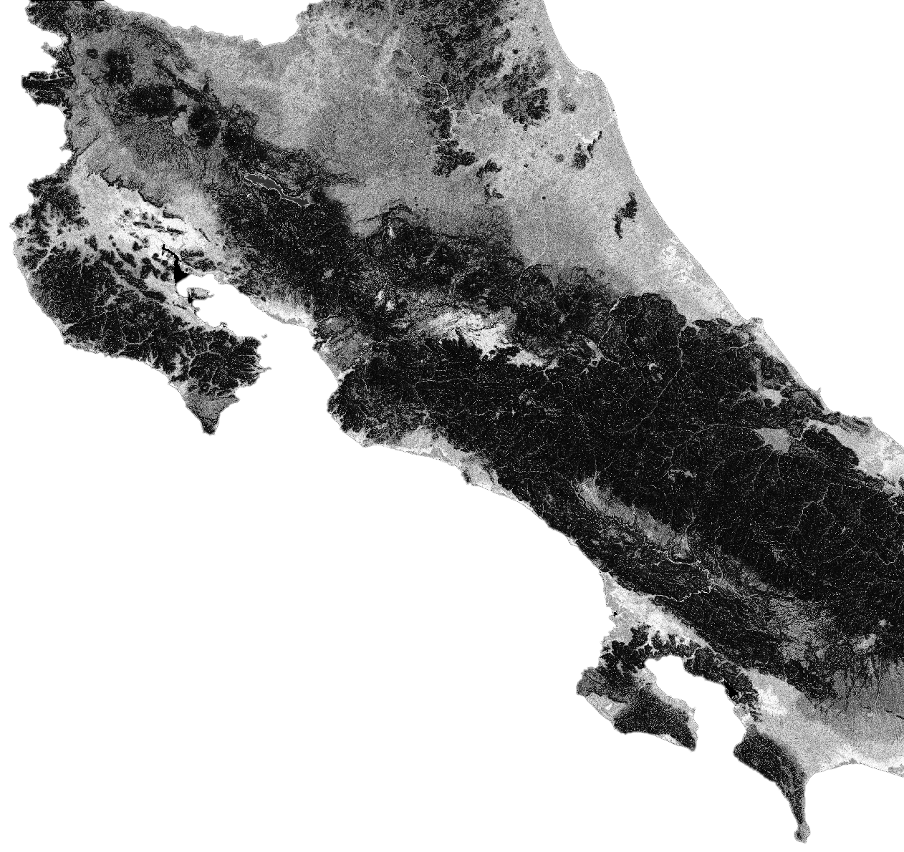
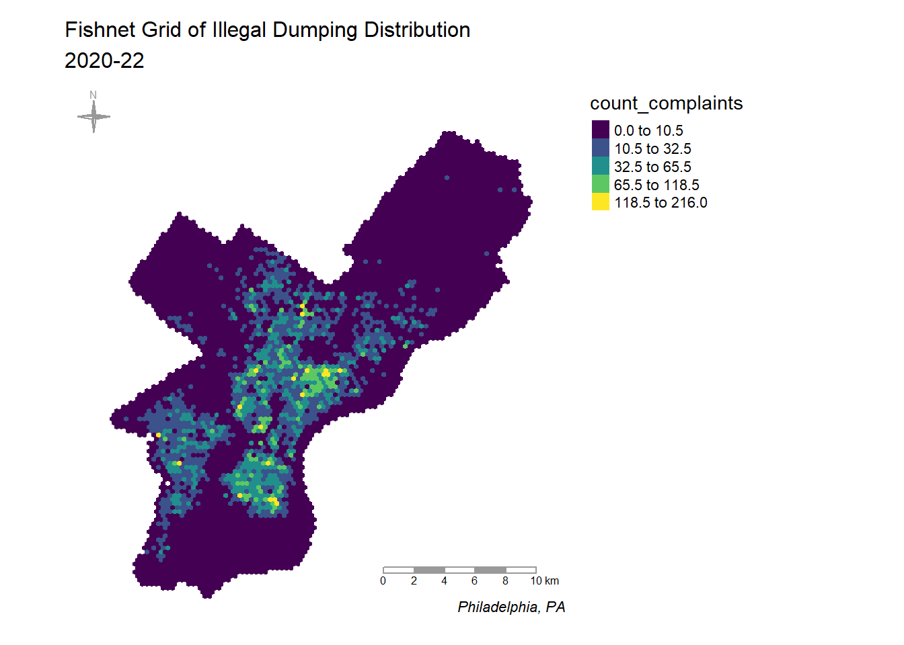
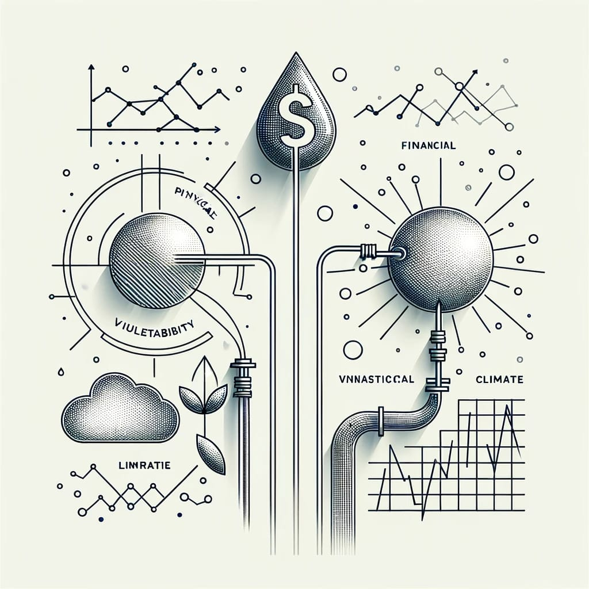
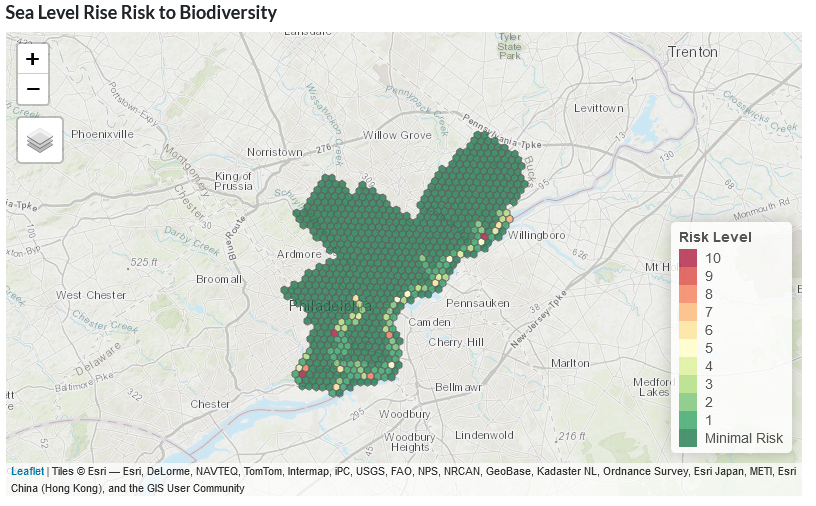
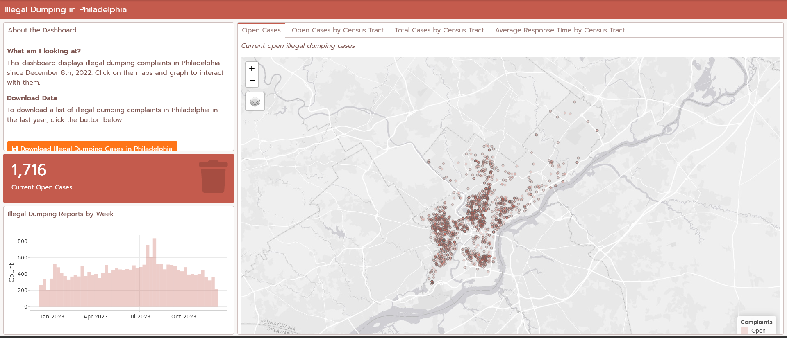

Nissim Lebovits
Home
My Work
Resume
My Work

Google Earth Engine for Urban Planning
Based on my work in Google Earth Engine for a UN-Habitat project, I gave a guest lecture to Penn’s graduate-level “deep learning applications for remote sensing” class. The…
Mar 14, 2024
Remote Sensing for Urban Planning
Based on an independent study that I did in remote sensing applications for urban planning, I gave a guest lecture to Penn’s graduate-level “deep learning applications for…
Jan 21, 2024

Clean & Green Philly
Philadelphia has a gun violence problem. Through Code for Philly, I am leading a civic tech project that will help solve this problem by empowering community groups to carry out cleaning and greening interventions in the vacant…
Jan 1, 2024

Identifying Upzoning Opportunities
For a “Public Policy Analytics” class at Penn, Laura Frances and I analyzed conflicts between anticipated and current zoning. Using a random forest model trained on historic…
Dec 22, 2023

Flood Prediction for Costa Rica
As part of a broader UN-Habitat initiative, I have been developing a methodology to predict urban flooding probabilities using open source remote…
Dec 11, 2023
Wetland Change in Argentina
For an independent study in applications of remote sensing for sustainable…
Dec 4, 2023

Predicting Illegal Dumping
Illegal dumping is a major problem in Philadelphia. Especially in low-income, minority neighborhoods, illegal dumping has a significant impact on quality of life, property…
Oct 19, 2023

Identifying Vulnerable Water Suppliers
As a research assistant for Professor Allison Lassiter, I work on assessing the vulnerability of U.S. coastal drinking water suppliers to climate change. We consider…
Jan 2, 2023

Sea Level Rise Threat to Biodiversity
For a floodplain management class in my first semester at Penn, I was interested in using citizen science data from eBird to explore conflicts between biodiversity and sea…
Dec 14, 2022

Illegal Dumping Live Dashboard
To improve my R skills, I built a dashboard in R that uses
flexdashboard
to visualize illegal dumping in Philadelphia. The dashboard is interactive and allows users to choose different…
Dec 2, 2022
No matching items